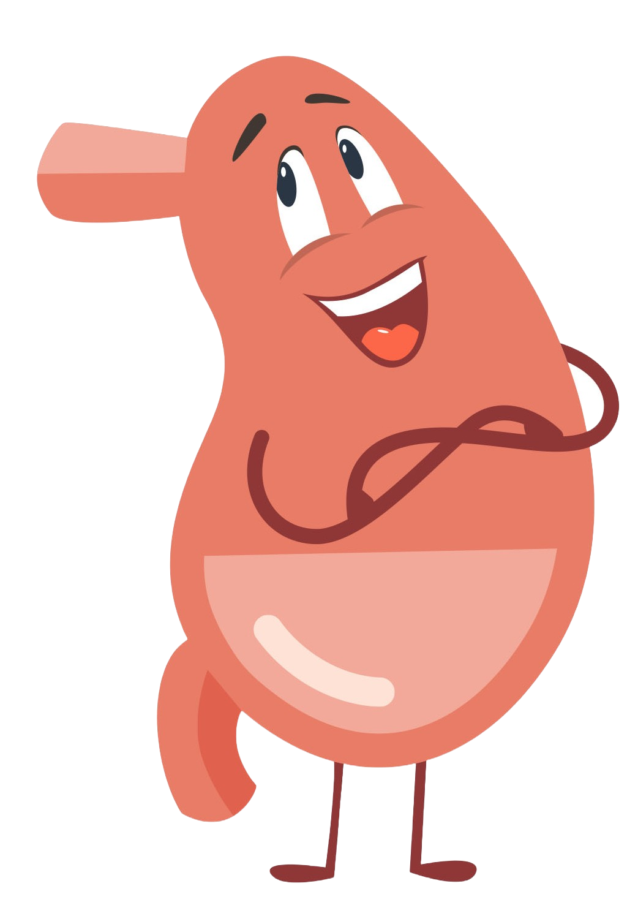
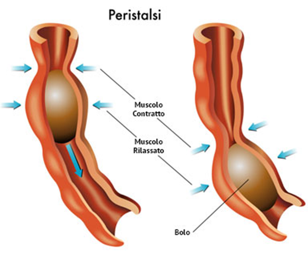

Lo
Lo
Stomaco
Lo stomaco è un organo muscolare a forma di sacco, che mescola in continuazione il cibo (bolo) con i succhi gastrici, grazie ai muscoli involontari delle sue pareti.
Questi potenti succhi gastrici (acidi ed enzimi), prodotti dalle numerose ghiandole all'interno dello stomaco, trasformano il bolo in una poltiglia semi-liquida chiamata chimo.
Dallo stomaco, il chimo passa nell'intestino, un tubo lungo e contorto, diviso in due parti:
- l'intestino tenue;
- E l'intestino crasso;
